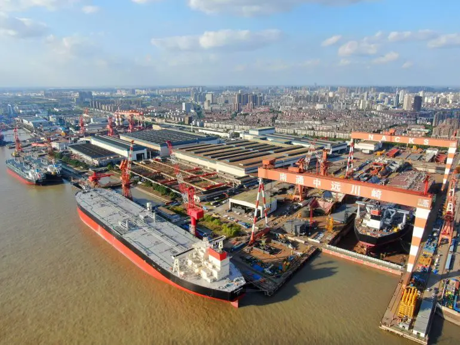

Shipyards are large industrial locations where ships are built, repaired, and maintained. These facilities are usually located near coastlines or major rivers so that completed ships can be easily launched into the water. Shipyards contain huge cranes, dry docks, workshops, and specialized equipment used to assemble massive sections of cargo ships.
Thousands of skilled workers contribute to shipbuilding operations. Engineers design the vessels, welders join steel structures together, and technicians install engines and electronic systems. Modern shipyards use advanced technology such as computer controlled cutting machines and robotic welding systems to increase precision and efficiency.